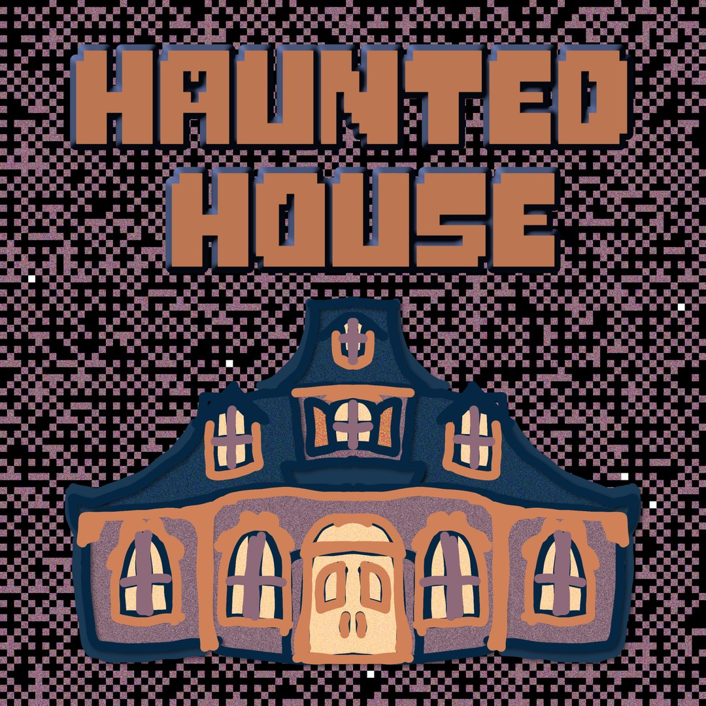

Portfolio
Original music for games, film, and interactive media. Browse by genre, project type, or year, or search for something specific below.
Original music for games, film, and interactive media. Browse by genre, project type, or year, or search for something specific below.

Singles